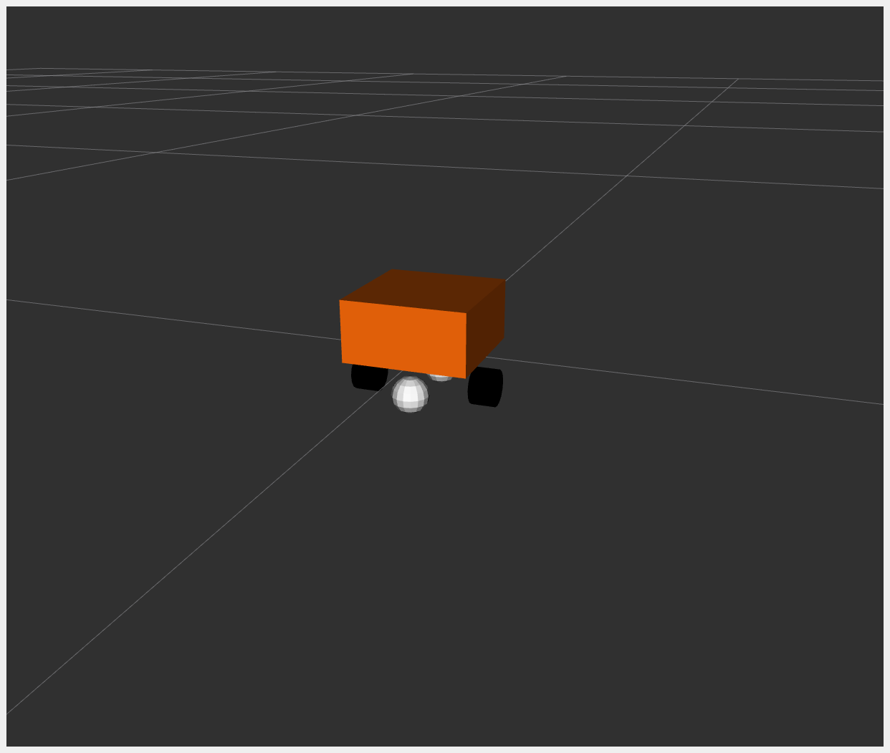

DiffBot
DiffBot, or Differential Mobile Robot, is a simple mobile base with differential drive. It is essentially a box that moves according to differential drive kinematics.
For example_2, the hardware interface plugin is implemented with only one interface:
Communication is done using a proprietary API to communicate with the robot control box.
Data for all joints is exchanged at once.
The DiffBot URDF files can be found in the description/urdf folder.
Tutorial Steps
1. Check DiffBot Description Launch
To verify that DiffBot descriptions are working properly, run:
ros2 launch ros2_control_demo_example_2 view_robot.launch.py
Warning: Output like
Warning: Invalid frame ID "odom" passed to canTransformis expected. It happens whilejoint_state_publisher_guiis starting.

2. Start DiffBot Launch
ros2 launch ros2_control_demo_example_2 diffbot.launch.py
This starts the robot hardware, controllers, and opens RViz. You will see internal state logs in the terminal—these are for demonstration only and should be avoided in production code.
If you see an orange box in RViz, everything has started properly.
3. Check Hardware Interface
ros2 control list_hardware_interfaces
Expected output:
command interfaces
left_wheel_joint/velocity [available] [claimed]
right_wheel_joint/velocity [available] [claimed]
state interfaces
left_wheel_joint/position
left_wheel_joint/velocity
right_wheel_joint/position
right_wheel_joint/velocity
The [claimed] marker means a controller has access to command DiffBot. The interface type is velocity, typical for differential drive.
4. Check Controllers
ros2 control list_controllers
Expected output:
diffbot_base_controller[diff_drive_controller/DiffDriveController] active
joint_state_broadcaster[joint_state_broadcaster/JointStateBroadcaster] active
5. Send Commands to Diff Drive Controller
ros2 topic pub --rate 10 /cmd_vel geometry_msgs/msg/TwistStamped "
header: auto
twist:
linear:
x: 0.7
y: 0.0
z: 0.0
angular:
x: 0.0
y: 0.0
z: 1.0"
You should now see an orange box circling in RViz and terminal logs like:
[INFO] Writing commands:
command 43.33 for 'left_wheel_joint'!
command 50.00 for 'right_wheel_joint'!
6. Introspect Hardware Component
ros2 control list_hardware_components
Expected output:
Hardware Component 1
name: DiffBot
type: system
plugin name: ros2_control_demo_example_2/DiffBotSystemHardware
state: id=3 label=active
command interfaces
left_wheel_joint/velocity [available] [claimed]
right_wheel_joint/velocity [available] [claimed]
To test with mock hardware (useful if simulator is unavailable), restart with:
ros2 launch ros2_control_demo_example_2 diffbot.launch.py use_mock_hardware:=True
Then run:
ros2 control list_hardware_components
Expected output:
Hardware Component 1
name: DiffBot
type: system
plugin name: mock_components/GenericSystem
state: id=3 label=active
command interfaces
left_wheel_joint/velocity [available] [claimed]
right_wheel_joint/velocity [available] [claimed]
This shows a different plugin was loaded. Check diffbot.ros2_control.xacro to see:
<hardware>
<plugin>mock_components/GenericSystem</plugin>
<param name="calculate_dynamics">true</param>
</hardware>
This enables integration of velocity commands into position state, visible in /joint_states. Position should increase over time while moving.
Files Used for This Demo
Launch file: diffbot.launch.py
Controllers YAML: diffbot_controllers.yaml
URDF files:
RViz config: diffbot.rviz
Hardware interface plugin: diffbot_system.cpp